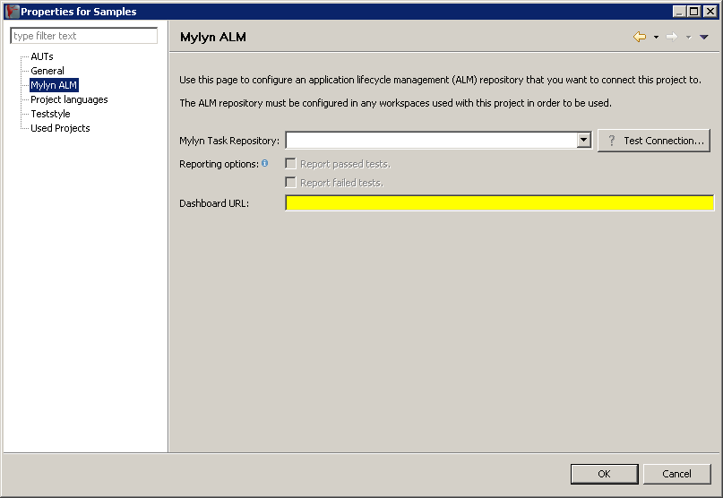

3.22.4.1 Configuring a task repository for your Project
Once you have configured one or more repositories for your workspace 3.22.1, you can select one of these to be the test-relevant repository for your Project . This will let you:
- Add a task ID from this repository to Test Cases and Test Suites in the Project to signify that this item is the test for this task 3.22.4.2.
- Automatically report test results to the task defined when a test runs.
- View the test results for the relevant item in the dashboard as a link from the task repository.
To configure a task repository for your Project :
- In the Project Properties, select Mylyn ALM from the tree on the left 3.29.
- In the page that appears, you can select a repository from the combo-box. You can validate the repository settings using the button.
- You can then choose whether to only report failed tests, only report successful tests, or both.
- Enter the URL of the Dashboard that is configured to use the correct Database for your test results. This is the Dashboard that will be opened when you click on a test result link from the task repository. For more information on configuring and starting the Dashboard , see the documentation 3.23.
Figure 3.29: ALM Settings
|

|
Copyright BREDEX GmbH 2014. Made available under the Eclipse Public License v1.0.